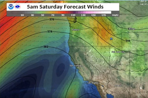

Southeast Idaho Weather Forecast
by Bambi Gibson
Mike Houston from the Southeast Idaho Weather Hazard Briefing out of Pocatello, Idaho reports there will be continued warm temperatures across the region with readings in the 50s in the Snake River plain and lower 40s to lower 50s in the central mountains and Southeast Highland. Friday will bring some wind. Saturday morning will see light precipitation along the Montana – Wyoming border. Sunday may see the same light precipitation. Click here to continue to video report
 30 N 1st E
Preston, ID 83263
30 N 1st E
Preston, ID 83263